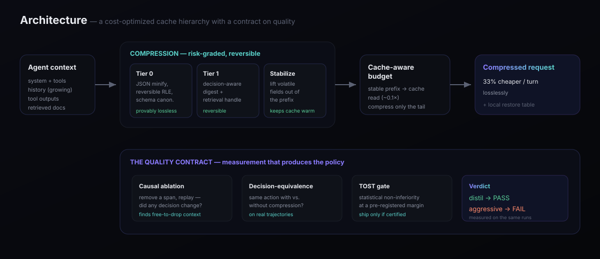
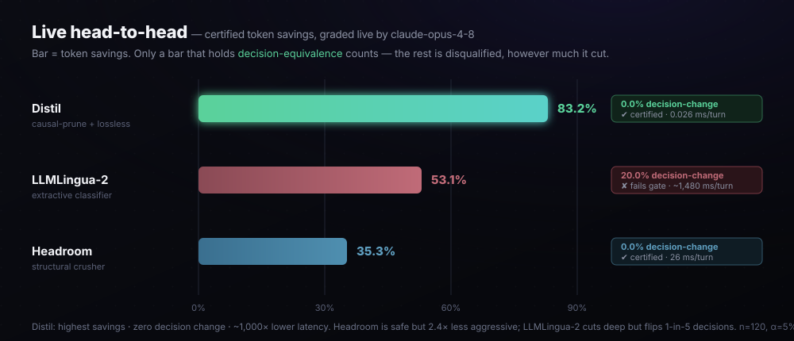
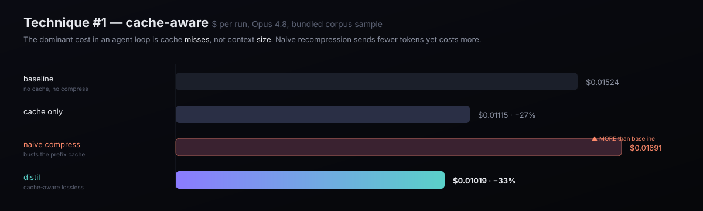

Every other compressor asks you to trust it won't break your agent. Distil is the only one that proves it won't.
On 500 real coding tasks, compressed context matched full context within statistical noise — 42.0% vs 39.2% (SWE-bench Verified, E14; 95% CI −0.6..+6.2pp — no significant difference)
New to this? See how it works in plain English →
$ uvx --from distil-llm distil bench # ~10s, no API key GATE: PASS — every trajectory certified non-inferior; aggressive rejected. $ distil wrap -- claude # route your agent, zero config distil · ▼75.0K · 62% smaller · $0.31 · total ▼27.0M · ✓eq 99.5%
Honest scope: the certificate covers decision-equivalence on a trajectory corpus, not end-to-end task success — on real SWE-bench Verified the proxy does not transfer once compression gets aggressive, and we publish that. Relevance-gated reversible compression is the one condition proven non-inferior to full context — full statement, CIs and ablations →
One command sets you up — distil onboard detects your agent + billing, wires the status line, and hands you the exact next steps:
pipx install distil-llm && distil onboard
…or route Claude Code directly, no code change: distil wrap --expand -- claude
No jargon. Here's the whole idea in three pictures.
Every turn, your agent re-sends the entire conversation — and you pay for all of it, again. The model can cheaply "remember" the parts that haven't changed, so Distil keeps those parts perfectly stable and only touches the new bits. Like not re-reading someone the whole book to add one sentence.
Most of that context never changes what the agent decides to do next. Distil finds those dead-weight parts with a simple test — remove it, replay, did the decision change? If no, it was safe to cut. Keep the clues, drop the filler.
Here's the part nobody else does: Distil measures that your agent still makes the same choice on the shrunk context. If it can't prove that, it sends everything, untouched. A warranty on the compression, not a promise.
And nothing is truly thrown away — trimmed detail is filed nearby, and the agent can pull back the exact original the moment it needs it. That's why Distil can compress hard and stay safe. The gentle, longer walkthrough →
Most compressors optimize bytes. In an agent loop the money is somewhere else.

You re-send the growing context every turn. With prompt caching a cache read is ~10× cheaper than fresh input — so the dominant cost is cache misses, not context size. Distil keeps the prefix byte-stable and compresses only the volatile tail. Naive recompression sends fewer tokens yet costs more, because it rewrites the cached prefix every turn.
The eval engine isn't a ruler — it's a discovery engine. Remove a context block, replay, did any decision change? Blocks that never change a decision are provably free to drop: speculative retrievals, stale history. The measurement produces the compression policy.
We didn't just benchmark ourselves. We ran the real LLMLingua-2 and Headroom packages through the same gate, graded live by the real model.

Underneath it: a strategy ships only if a pre-registered non-inferiority test certifies it. Lossless passes; quality-degrading compression is rejected.
$ distil savings --pricing claude-opus-4-8 strategy $ / run vs baseline cache hits ------------------------------------------------------------------------ baseline (no cache, no compress) 0.01524 0.0% 0 cache only 0.01115 26.8% 1,028 naive compress + cache 0.01691 -11.0% 0 ← busts cache distil (cache-aware lossless) 0.01019 33.1% 1,028 $ distil certify --strategy distil decision-equivalence match rate: 100.0% VERDICT: PASS (certified non-inferior) $ distil certify --strategy aggressive decision-equivalence match rate: 0.0% VERDICT: FAIL (would degrade quality — blocked)

A strategy isn't trustworthy because it works once. distil bench certifies
every domain — ops, coding, support, research, data, devops, finance — or it doesn't ship.

Apply the provably-safe ones everywhere; gate the rest on evidence.
Reconstructable transforms — JSON minify, reversible run-length encoding. Always on.
Decision-aware digest + a handle; the full original stays local and re-expands on demand.
Pruning & summarization allowed only at ratios the non-inferiority gate certifies.
| Capability | What it does | Loss profile |
|---|---|---|
| Priced cache-aware engine | Models the multi-turn loop and proves naive recompression busts the cache | — |
| Schema canonicalization | Recursively key-sorts JSON/tool payloads so the prefix is byte-stable | lossless |
| Volatile-field extraction | Lifts dates/UUIDs/JWTs out of the cached prefix so it stops churning | lossless · reversible |
| Reversible digest + handles | Originals stay local and re-expand on demand | reversible |
| Reject-if-bigger invariant | Never emits a block larger than its original | safety |
| Causal / counterfactual pruning | Ablation discovers context that never changes a decision | certified |
| TOST non-inferiority gate (DERC) | Per-step: a strategy ships only if it passes the quality contract | the moat |
| Trajectory-level certificate | Task-level: distil certify-trajectories bounds end-to-end degradation on matched full/compressed runs | the differentiator |
| Savings ledger + leaderboard | Local-first, privacy-preserving cumulative savings | opt-in |
Point any base_url-honoring client at the proxy — Python, TypeScript, any language —
and get cache-aware lossless compression. See integrations →

The stdlib-only core makes the packaging clean: zero runtime deps, corpus bundled.
uvx — zero install, recommended. Runs straight from PyPI, nothing to clean up.
uvx --from distil-llm distil bench
Run straight from PyPI — nothing installed. Needs uv.
pipx install distil-llm distil certify
Permanent, isolated venv — PEP 668-safe. brew install pipx if needed.
brew install dshakes/tap/distil distil bench
Isolated keg — doesn't touch your system Python.
docker build -t distil . docker run distil bench
Container image — reproducible, zero host deps.
make pyz python dist/distil.pyz bench
Single file — copy distil.pyz anywhere with Python 3.9+.
Already installed? Do this next → distil onboard detects your agent + billing, wires the savings status line, and gives you a guided tour tailored to your setup — then distil default makes it the default for every session (distil offboard reverses that).
pip install is blocked by PEP 668 on modern macOS/Linux, and that's fine). distil onboard wires your agent and the savings status line; distil default makes it the default and distil offboard fully reverses it — nothing is touched that isn't put back. Node/other stacks just point their SDK baseURL at distil proxy. Verify anytime: distil bench → expect GATE: PASS.
from distil.adapters.anthropic import wrap client = wrap(anthropic.Anthropic()) # compresses + keeps the cache warm
--tokenizer anthropic and
--runner anthropic make it billing-grade against the real model.
One proxy in front of any agent. A signed decision-equivalence certificate on the way out — or it doesn't compress. No API key to try it.